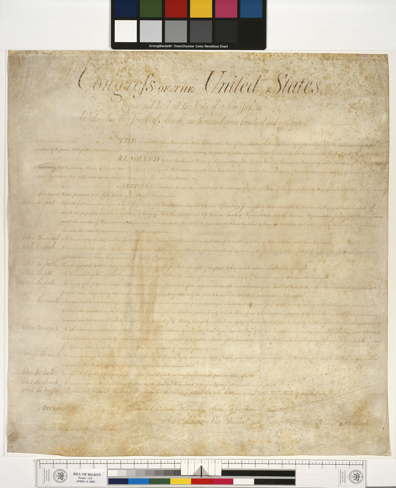

Directions: Fill in the chart as we work the contest record by record. Keep this page in your notebook. You will use it again on the review day before the unit test.

| The record | Its fear or claim | The answer it offered | The settlement it got |
|---|---|---|---|
| Madison on faction, No. 10 | |||
| Brutus on size and power, No. 1 | |||
| Madison on the design, No. 51 | |||
| The Massachusetts compromise, 1788 | |||
| The Bill of Rights, 1789 to 1791 |
The argument in one sentence. Finish this sentence in your own words, using at least two rows of the chart as evidence. The skeptics lost the vote and changed the Constitution because...
| The record | Its fear or claim | The answer it offered | The settlement it got |
|---|---|---|---|
| Madison on faction, No. 10 | A majority faction, united by a passion or interest adverse to the rights of others, would form in a small republic and rule at once. | Control the effects of faction rather than remove its causes. Extend the sphere so interests multiply and an unjust majority can rarely form or act together. | The extended republic itself. The Constitution he defended was ratified without the change he had argued was unnecessary, a bill of rights, which arrived later by the other route. |
| Brutus on size and power, No. 1 | A free republic cannot subsist over a vast territory of differing manners and interests, and the necessary and proper and supremacy clauses would consolidate the states into one great republic. | Keep thirteen confederated republics under a federal head for defined national purposes only, and refuse the frame that consolidates them. | Defeat on the frame, victory on its fence. The Constitution was ratified, and his missing bill of rights became its first ten amendments, closing with the reserved powers of Amendment X. |
| Madison on the design, No. 51 | A government strong enough to control the governed could refuse to control itself, since its officers would not be angels. | Make ambition counteract ambition. Divide power between two governments, then subdivide each among separate departments, so rights hold a double security. | The design as written. The compound republic opened for business in April 1789 with its divisions intact, and justice named in the essay as the end the machinery served. |
| The Massachusetts compromise, 1788 | A convention split nearly in half, where unconditional ratification could lose and rejection could break the union the state needed. | Ratify at once and recommend amendments for the first Congress to take up, joining consent now to a written promise of repair. | Ratification carried 187 to 168 in February 1788. Virginia and New York copied the form, and the promise set the agenda of the First Congress. |
| The Bill of Rights, 1789 to 1791 | The Federalist fear that a written list of rights could be read as complete, and the Anti-Federalist fear that unlisted liberty stood unguarded. | Twelve amendments drawn from the state declarations and the conventions' recommendations, with a Ninth Amendment guarding rights the list does not name. | Ten amendments ratified by December 15, 1791, when Virginia approval made them part of the Constitution. The apportionment amendment failed, and the pay amendment waited two centuries to become the Twenty Seventh. |
The argument in one sentence. Strong answers join a lost vote to a won text. The skeptics lost the vote and changed the Constitution because their objections, above all the missing bill of rights, were the price of the close conventions, Massachusetts at 187 to 168, Virginia at 89 to 79, and New York at 30 to 27, and the Federalists who needed those votes paid the price in the First Congress, in amendments ratified by December 15, 1791.